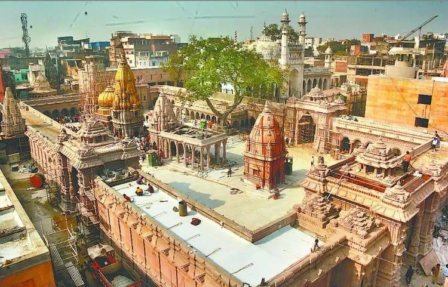
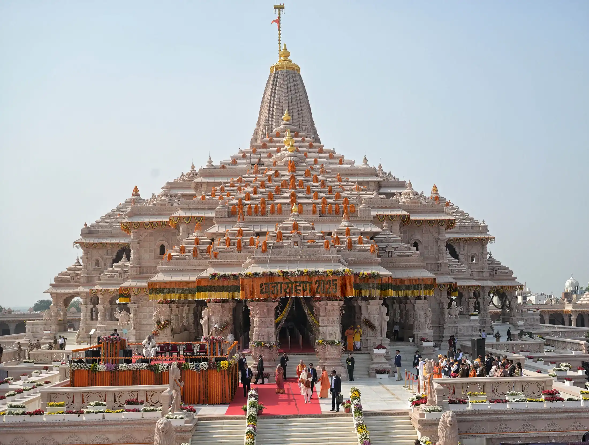

Ancient Kashi: History, Archaeology and Spiritual Heritage
A bilingual guide to Kashi / Varanasi with Vishwanath Temple, Ganga ghats, Sarnath archaeology, legends, Banarasi culture and family travel planning.
Read More
Helpful, locally written guides for Ram Mandir darshan, Ayodhya tour package planning, cab booking, hotels, Kashi, Prayagraj, Chitrakoot and complete spiritual tour India routes.

A bilingual guide to Kashi / Varanasi with Vishwanath Temple, Ganga ghats, Sarnath archaeology, legends, Banarasi culture and family travel planning.
Read More
A long-form local guide to Saket, temple architecture, archaeological layers, Saryu traditions, legends, pilgrim routes and Ayodhya tour planning.
Read More
Darshan tips, hotels, cab guidance, one day and two day tour plans for families visiting Ayodhya in 2026.
Read More
A relaxed two day itinerary covering Ram Mandir, Hanuman Garhi, Kanak Bhawan, Saryu Aarti and local food breaks.
Read More
How to connect Ayodhya and Kashi with cab routes, temple timing, Ganga Aarti and Prayagraj add-ons.
Read More
A simple guide to Triveni Sangam, Akshayavat, temples, boating and combining Prayagraj with Ayodhya or Kashi.
Read More
Plan Ramghat, Kamadgiri, Sati Anusuya, Gupt Godavari and a peaceful Ramayan circuit tour from Ayodhya.
Read MoreNo blog found. Try another keyword or choose All.
Use our internal travel pages to compare services before you book: Home, Tour Packages, Cab Tariff, Hotels, Booking, and Contact.